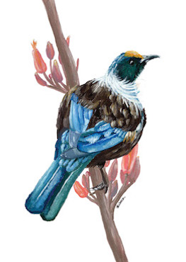
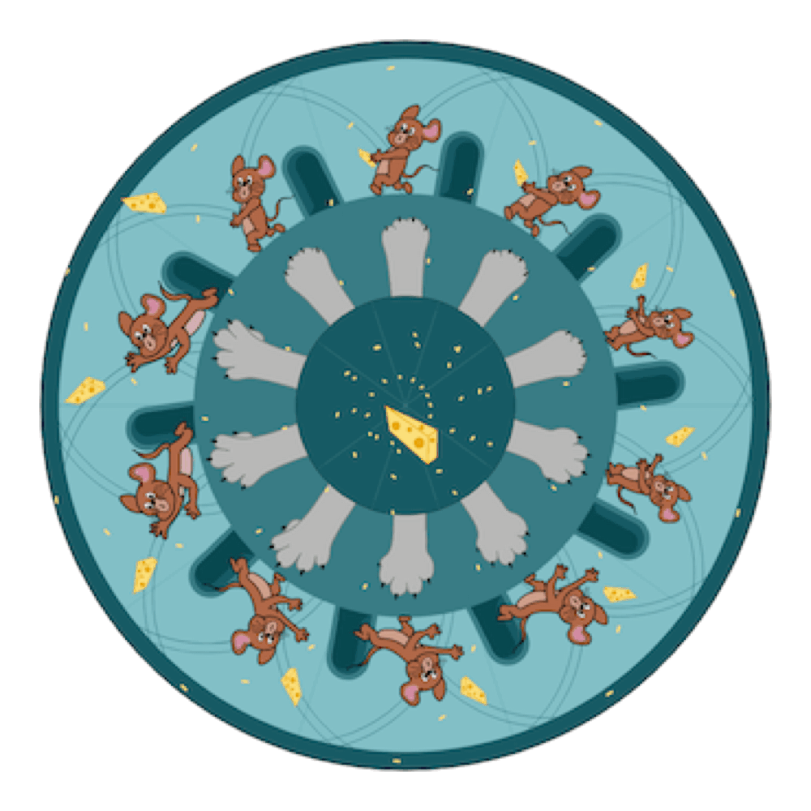
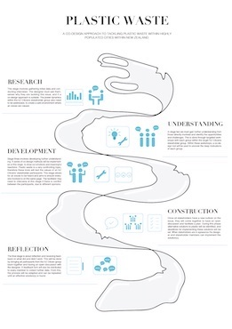

I have always had a passion for creation, which started out with art – painting and drawing – and this has progressed to design. I'm in my final year of a Bachelor of Design Innovation at Victoria University, majoring in communication design (graphic design and illustration), and minoring in design for social innovation. Whilst studying I still enjoy taking time to paint, lately I have been painting Native New Zealand birds, and some nature scenes based off of photographs. This website is a showcase of my love for anything art and design.
Artwork and Illustration

Fantail
One of my favourite bird paintings I created in 2022.
A Fantail/Piwakawaka painted in acrylic on A5 catridge paper. I really wanted to capture in this painting how this fantail was mid flight. This is because all my other bird paintings have been perched on a branch or standing (the Heron).

Tui
This Tui is painted in acrylic on A5 cartridge paper. I love how vibrant the blue on the Tui's wings are and the extra pops of colour from the flowers on the branch.

Docked boat
This old metal docked boat, with seaweed covering the rope attached, and sitting in the still water, is one of my favourite watercolour paintings to date! This painting has been done with watercolour paint on A5 Watercolour paper.

Dock
This is a watercolour painting of a wooden dock at sunset, painted on A5 watercolour paper.
Design Work

The Adventures of Stewy picture book
I created this fun and light-hearted picture book about a dog called Stewy for my Visual Narratives course at Victoria University, in my second year. I had a lot of fun with this childrens picture book, and am considering creating more picture books like this one. This book takes the reader on a sausage dogs mischevious journey to the beach, whilst his owners were at work. Stewy gets up to all sorts of antics, including stealing a sandwich from picnic-goers! This picture book was heavily inspired by my love for sausage dogs. I wanted to take the reader on a journey of what I would imagine a sausage dog could get up to if he had the chance for freedom (no owners controlling where he goes).

Tom and Jerry coded phenakistoscope
This Tom and Jerry inspired phenakistoscope was a piece of work I completed during my creative coding first year course at Victoria University. I had no prior coding experience prior to this class, but with a lot of time and effort put into each project and learning code, I feel very proud of what I was able to achieve. This project was my favourite of the three projects completed in the course!

Plastic waste poster
This was a piece from my third Co-Design project from my first semester of 2023 – my second year of study. The purpose of this poster is to visually display a co-design approach to tackling plastic waste within highly populated cities within New Zealand.

Poster on plastic waste
In the first semester of my second year at university, I took a typography course. This poster communicating the negative effects of Plastic Waste, was my favourtie of the three assignments. For this poster I wanted to communicate visually how plastic pollution comes in many forms – hence the plastic bottle and netting typeface – and how we must take action to stop plastic pollution and climate change. Sustainability is one of my highest values, therefore I like to communicate this value in many of my posts.
Get In Touch
My contact details are below. Please feel free to contact me either via email, or social media direct message if you have any questions, comments or inquiries regarding my work.
-
Email
jade23.nz@gmail.com


{kind=link}
{kind=link}
{kind=link}